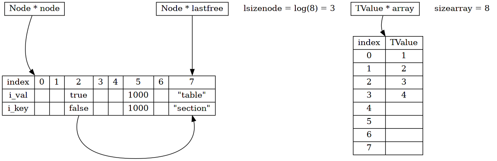
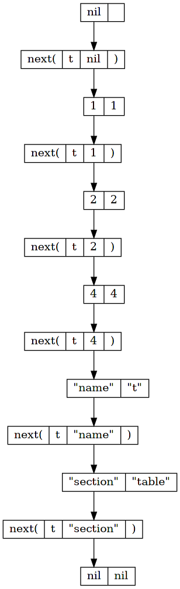
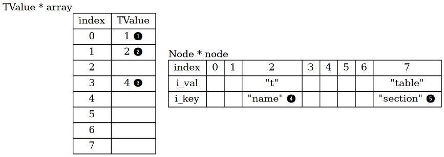

table
初次接触 lua 的人都有困惑， 多数动态语言都会内建 dict 和 array 的概念，而 lua 用 table 同时表示这两个概念。
所谓 dict 不过是 kv 存储，从某种角度来看，可以将 array 看作 k 是整数的一种特殊情况。
本章就来从源码角度认识 lua 中的 table。
1 structure
338: typedef struct Table { 339: CommonHeader; 340: lu_byte flags; /* 1<<p means tagmethod(p) is not present */ 341: lu_byte lsizenode; /* log2 of size of `node' array */ 342: struct Table *metatable; 343: TValue *array; /* array part */ 344: Node *node; 345: Node *lastfree; /* any free position is before this position */ 346: GCObject *gclist; 347: int sizearray; /* size of `array' array */ 348: } Table;
table 的结构并不复杂，除去 CommonHeader 和 gclist，剩余的字段可分为 3 部分。
dict 相关
- Node * node ，kv 存储的数组
lu_bytelsizenode ，数组的大小，用 log2 表示- Node * lastfree ，在数组中从尾向前，第一个空闲位置的指针
array 相关
- TValue * array ，array 存储的数组
- int sizearray ，array 的大小
metatable 相关
- struct Table * metatable ，metatable 的指针
lu_byteflags ，一个字节，用于缓存加速 meta method 的搜索
从结构中可以发现，table 并不只是单纯的 dict 结构，为了效率，在内部也用 array 的方式进行辅助存储。
下面就 3 个部分，分别讨论
2 dict
在 lua 中，用 table 表示 dict 概念，有非常大的自由度。
使用 k v 存储时
- k 不能是 nil
- 若 v 是 nil，表示从 dict 中删除 k v
- 除此之外，k v 可以是任意值，无论是 function 还是 string
本质上来看，这就是用 TValue 统一表示所有“值”所带来的好处。 这一点从 Node 结构中可以清楚的看出来。
323: typedef union TKey { 324: struct { 325: TValuefields; 326: struct Node *next; /* for chaining */ 327: } nk; 328: TValue tvk; 329: } TKey; 330: 331: 332: typedef struct Node { 333: TValue i_val; 334: TKey i_key; 335: } Node;

Figure 1: Node & TKey
Node 代表一个 k v 存储，k v 分别用 i_key 和 i_val 来表示。
i_val 本身是 TValue， i_key 是 TKey。
TKey 本身是一个 union，其中用 tvk 来索引本身的值，即 TValue。
另一项 nk 则添加了 next 指针，辅助在 Node 数组中做链接。
所以本质上， i_key 也是 TValue。
dict 表示的是多个 kv 的集合，在 table 内部，所有 kv 经过相应的安排，存储在 Node 数组中。
比如下面的代码，在 table 内部将可能会如此表示。
local t = {} t[print] = true t[true] = false t["return"] = 0 t["name"] = "print" t["tool"] = "dot"

Figure 2: kv stored in Node array
至于 kv 存取的方式，在 get set 小节详细讨论。
有了上面的理解，相关的宏也就容易理解了。
13: #define gnode(t,i) (&(t)->node[i]) 14: #define gkey(n) (&(n)->i_key.nk) 15: #define gval(n) (&(n)->i_val) 16: #define gnext(n) ((n)->i_key.nk.next) 17: 18: #define key2tval(n) (&(n)->i_key.tvk)
352: /* 353: ** `module' operation for hashing (size is always a power of 2) 354: */ 355: #define lmod(s,size) \ 356: (check_exp((size&(size-1))==0, (cast(int, (s) & ((size)-1))))) 357: 358: 359: #define twoto(x) (1<<(x)) 360: #define sizenode(t) (twoto((t)->lsizenode))
2.1 main position
table 内部使用巧妙的方式来存储 kv，其中关键的概念是 main position。
因为 k 可以是任意类型的值，在存储 kv 之前，必须先确定将其安排在什么位置， 这个位置就是 kv 的 main position。
计算的方式并不陌生，先计算 k 的 hash 值，再模除 node 数组长度，得到 main position。
前面提到，k 可以是 nil 之外任意类型的值，所以在计算 main position 的时候， 针对不同的类型有不同的计算方式。
96: /* 97: ** returns the `main' position of an element in a table (that is, the index 98: ** of its hash value) 99: */ 100: static Node *mainposition (const Table *t, const TValue *key) { 101: switch (ttype(key)) { 102: case LUA_TNUMBER: 103: return hashnum(t, nvalue(key)); 104: case LUA_TSTRING: 105: return hashstr(t, rawtsvalue(key)); 106: case LUA_TBOOLEAN: 107: return hashboolean(t, bvalue(key)); 108: case LUA_TLIGHTUSERDATA: 109: return hashpointer(t, pvalue(key)); 110: default: 111: return hashpointer(t, gcvalue(key)); 112: } 113: }
针对不同类型详细来看，
50: #define hashpow2(t,n) (gnode(t, lmod((n), sizenode(t)))) 51: 52: #define hashstr(t,str) hashpow2(t, (str)->tsv.hash) 53: #define hashboolean(t,p) hashpow2(t, p) 54: 55: 56: /* 57: ** for some types, it is better to avoid modulus by power of 2, as 58: ** they tend to have many 2 factors. 59: */ 60: #define hashmod(t,n) (gnode(t, ((n) % ((sizenode(t)-1)|1)))) 61: 62: 63: #define hashpointer(t,p) hashmod(t, IntPoint(p))
2.1.1 string
string 比较简单，依旧使用自身的 hash，再模除 node size 得到 main position。
2.1.2 bool
bool 类型更简单，直接锁定了 main position 的 0 1 位置。
2.1.3 light userdata
对于 light userdata，强制将 pointer 地址解析为 unsigned int 作为 hash 值， 模除 node size - 1 得到 main position。
因为地址一般按照 2 的幂对齐，而且 node size 也是 2 的幂，直接模除不容易将值分散开来， 所以就使用 node size - 1。
hashmod 末尾的 | 1 是避免出现 mod 0 的情况。
2.1.4 GCObject
同 light userdata，进行指针运算。
2.1.5 number
66: /* 67: ** number of ints inside a lua_Number 68: */ 69: #define numints cast_int(sizeof(lua_Number)/sizeof(int))
81: /* 82: ** hash for lua_Numbers 83: */ 84: static Node *hashnum (const Table *t, lua_Number n) { 85: unsigned int a[numints]; 86: int i; 87: if (luai_numeq(n, 0)) /* avoid problems with -0 */ 88: return gnode(t, 0); 89: memcpy(a, &n, sizeof(a)); 90: for (i = 1; i < numints; i++) a[0] += a[i]; 91: return hashmod(t, a[0]); 92: }

lua_Number 默认用 double 来表示，在 32 位系统中，double 通常占用 64 位。
从二进制表示层面，将 double 分拆为 2 个 unsigned int，求和后再模除 node size - 1 得到 main position。
这里要注意两个细节，
一是对 +0 -0 做了统一处理。
+0 -0 在数值角度上是相等的，但是在二进制浮点表示1上，
存在标志位的不同，如果依旧使用分拆 unsigned int 的方式， +0 -0 将计算得到不同的 main position，
这显然不是我们想要的，所以这里统一用 main position 0 来处理。
二是在模除的过程中， hashmod 并非使用 node size 进行模除，而是 node size - 1，原因同上。
2.2 set
明确 main position 之后，下一步来了解如何存储 kv。
根据代码中的注释，dict 部分的实现 use a mix of chained scatter table with brent's variation。
8: /* 9: ** Implementation of tables (aka arrays, objects, or hash tables). 10: ** Tables keep its elements in two parts: an array part and a hash part. 11: ** Non-negative integer keys are all candidates to be kept in the array 12: ** part. The actual size of the array is the largest `n' such that at 13: ** least half the slots between 0 and n are in use. 14: ** Hash uses a mix of chained scatter table with Brent's variation. 15: ** A main invariant of these tables is that, if an element is not 16: ** in its main position (i.e. the `original' position that its hash gives 17: ** to it), then the colliding element is in its own main position. 18: ** Hence even when the load factor reaches 100%, performance remains good. 19: */
有兴趣的可以研究论文2，这里仅从代码方面解析其实现。
table 模块中提供了 luaH_set 实现 kv 存储。
494: TValue *luaH_set (lua_State *L, Table *t, const TValue *key) { 495: const TValue *p = luaH_get(t, key); 496: t->flags = 0; 497: if (p != luaO_nilobject) 498: return cast(TValue *, p); 499: else { 500: if (ttisnil(key)) luaG_runerror(L, "table index is nil"); 501: else if (ttisnumber(key) && luai_numisnan(nvalue(key))) 502: luaG_runerror(L, "table index is NaN"); 503: return newkey(L, t, key); 504: } 505: }
可以观察到，其中只有 k 参数，而没有 v 参数。
这是因为这个方法只返回参数 k 在 table 中对应 node.i_val 的指针，由外部调用者自行进行 v 的赋值。
luaH_set 很简单，如果已经存在相应的 k，则直接返回；
通过一系列错误检测之后，调用 newkey 方法，添加 k。
392: /* 393: ** inserts a new key into a hash table; first, check whether key's main 394: ** position is free. If not, check whether colliding node is in its main 395: ** position or not: if it is not, move colliding node to an empty place and 396: ** put new key in its main position; otherwise (colliding node is in its main 397: ** position), new key goes to an empty position. 398: */ 399: static TValue *newkey (lua_State *L, Table *t, const TValue *key) { 400: Node *mp = mainposition(t, key); 401: if (!ttisnil(gval(mp)) || mp == dummynode) { 402: Node *othern; 403: Node *n = getfreepos(t); /* get a free place */ 404: if (n == NULL) { /* cannot find a free place? */ 405: rehash(L, t, key); /* grow table */ 406: return luaH_set(L, t, key); /* re-insert key into grown table */ 407: } 408: lua_assert(n != dummynode); 409: othern = mainposition(t, key2tval(mp)); 410: if (othern != mp) { /* is colliding node out of its main position? */ 411: /* yes; move colliding node into free position */ 412: while (gnext(othern) != mp) othern = gnext(othern); /* find previous */ 413: gnext(othern) = n; /* redo the chain with `n' in place of `mp' */ 414: *n = *mp; /* copy colliding node into free pos. (mp->next also goes) */ 415: gnext(mp) = NULL; /* now `mp' is free */ 416: setnilvalue(gval(mp)); 417: } 418: else { /* colliding node is in its own main position */ 419: /* new node will go into free position */ 420: gnext(n) = gnext(mp); /* chain new position */ 421: gnext(mp) = n; 422: mp = n; 423: } 424: } 425: gkey(mp)->value = key->value; gkey(mp)->tt = key->tt; 426: luaC_barriert(L, t, key); 427: lua_assert(ttisnil(gval(mp))); 428: return gval(mp); 429: }
newkey 是理解内部结构的关键。
调用时可能遇到 3 种情况，下面一一讨论。
2.2.1 mp free
2.2.2 colliding node in own mp
如果 k 的 main position（mp）已经被占用，说明出现了冲突， 占用 mp 的结点称为 colliding node。
colliding node 根据 i_key 也可以计算出自身的 main position（othern）。
如果 othern 和 mp 是相同的，说明两者确实发生了 hash 冲突，都应该使用这个位置。

但是位置只有一个，只能从当前空闲的结点借用一个位置（n），
然后使用头插法，用 i_key.next 将其链接起来。
可以发现，这个链条的起点从 main position 开始，链接的全部是 main position 相同（即 hash 冲突）的结点。
2.2.3 colliding node not in own mp
如果 othern 和 mp 不相同，说明 colliding node 是在之前冲突时，借用了此结点的位置。
之前是空闲的，可以借用，但是现在，明确拥有 mp 的 k 要来拿回属于自己的位置，colliding node 只能让出来。
让出的方法很简单，再另外找到一个空闲位置，放置 colliding node，原来的位置就还回去。
为了将新位置链接回去，同时从 othern 一路向下，查找到 colliding node 的上一个结点，并链接新的结点。
2.3 get
在 set 小节明确了 node 内部组织的方法之后，get 方法就很容易理解了。
466: /* 467: ** main search function 468: */ 469: const TValue *luaH_get (Table *t, const TValue *key) { 470: switch (ttype(key)) { 471: case LUA_TNIL: return luaO_nilobject; 472: case LUA_TSTRING: return luaH_getstr(t, rawtsvalue(key)); 473: case LUA_TNUMBER: { 474: int k; 475: lua_Number n = nvalue(key); 476: lua_number2int(k, n); 477: if (luai_numeq(cast_num(k), nvalue(key))) /* index is int? */ 478: return luaH_getnum(t, k); /* use specialized version */ 479: /* else go through */ 480: } 481: default: { 482: Node *n = mainposition(t, key); 483: do { /* check whether `key' is somewhere in the chain */ 484: if (luaO_rawequalObj(key2tval(n), key)) 485: return gval(n); /* that's it */ 486: else n = gnext(n); 487: } while (n); 488: return luaO_nilobject; 489: } 490: } 491: }
核心就是先计算得到 main position，再一路通过 next 向下查找， 如果 k 匹配，就返回相应的 v；否则返回 nil。
3 array
前面提到，为了效率，table 内部有特定的区域用于存储 array 相关的数据（k 为正整数）。
考虑如下代码，
local t = {1, 2, 3, 4}
如果内部使用 TValue[] 来存储，效率自然是最高的。
- 空间上，Node 结构大小至少为 2 * TValue，若直接用数组表示，只需要 1 * TValue 的空间；
- 时间上，若直接使用数组，可以直接索引元素，速度非常快，而 Node 需要在整个链条中使用 next 遍历。
但是，假如出现这种情况，
local t = {1, 2, 3, 4, [1000] = 1000}
索引都为正整数，但是中间并不连续，从 4 到 1000 出现了巨大的空隙。
假如依旧使用 TValue[] 来存储就不划算了，大小必须为 1000，中间浪费的空间太多。
综合考虑，lua 使用一种权衡的方式来安排正整数索引的数据。
具体而言，就是找到一个最大的整数 n，其中 0 到 n 之间至少有 n/2 个整数索引， 这样可以保持至少 50% 的利用率。
剩余在 n 范围之外的索引，依旧使用 kv 方式来存储。

需要注意的细节是，table 表示 array 的时候，默认索引从 1 开始。
相应的，table 中的 TValue *array 只存储正整数索引（>= 1）对应的值。 由于 C 语言数组的索引从 0 开始，所以存储时，有 1 个位置偏移。
3.1 get
在讲解 get 之前，需要明确一点，并且所有数字索引的 kv 都会存储在内部的 array 中。
对于类型是 number 的 k，需要其
- 不是浮点值，是整数值
- 是
>= 1的正整数 - 范围在
1 - sizearray之间
不在这个范围内的 kv，依旧按照 dict 来处理，从代码中可以明确看到这一点。
466: /* 467: ** main search function 468: */ 469: const TValue *luaH_get (Table *t, const TValue *key) { 470: switch (ttype(key)) { 471: case LUA_TNIL: return luaO_nilobject; 472: case LUA_TSTRING: return luaH_getstr(t, rawtsvalue(key)); 473: case LUA_TNUMBER: { 474: int k; 475: lua_Number n = nvalue(key); 476: lua_number2int(k, n); 477: if (luai_numeq(cast_num(k), nvalue(key))) /* index is int? */ 478: return luaH_getnum(t, k); /* use specialized version */ 479: /* else go through */ 480: } 481: default: { 482: Node *n = mainposition(t, key); 483: do { /* check whether `key' is somewhere in the chain */ 484: if (luaO_rawequalObj(key2tval(n), key)) 485: return gval(n); /* that's it */ 486: else n = gnext(n); 487: } while (n); 488: return luaO_nilobject; 489: } 490: } 491: }
432: /* 433: ** search function for integers 434: */ 435: const TValue *luaH_getnum (Table *t, int key) { 436: /* (1 <= key && key <= t->sizearray) */ 437: if (cast(unsigned int, key-1) < cast(unsigned int, t->sizearray)) 438: return &t->array[key-1]; 439: else { 440: lua_Number nk = cast_num(key); 441: Node *n = hashnum(t, nk); 442: do { /* check whether `key' is somewhere in the chain */ 443: if (ttisnumber(gkey(n)) && luai_numeq(nvalue(gkey(n)), nk)) 444: return gval(n); /* that's it */ 445: else n = gnext(n); 446: } while (n); 447: return luaO_nilobject; 448: } 449: }
3.2 set
set 的逻辑也很简单，不过其中有一点需要注意。
回忆之前 dict 部分的 set 方法，返回的是存储 v 的指针，而如果 kv 安排在 array 部分， 则不需要 newkey 过程，直接返回相应的 array 位置即可。
494: TValue *luaH_set (lua_State *L, Table *t, const TValue *key) { 495: const TValue *p = luaH_get(t, key); 496: t->flags = 0; 497: if (p != luaO_nilobject) 498: return cast(TValue *, p); 499: else { 500: if (ttisnil(key)) luaG_runerror(L, "table index is nil"); 501: else if (ttisnumber(key) && luai_numisnan(nvalue(key))) 502: luaG_runerror(L, "table index is NaN"); 503: return newkey(L, t, key); 504: } 505: } 506: 507: 508: TValue *luaH_setnum (lua_State *L, Table *t, int key) { 509: const TValue *p = luaH_getnum(t, key); 510: if (p != luaO_nilobject) 511: return cast(TValue *, p); 512: else { 513: TValue k; 514: setnvalue(&k, cast_num(key)); 515: return newkey(L, t, &k); 516: } 517: }
先调用 get 方法，得到结果 p， if (p != luaO_nilobject) 非常关键。
回忆 get 方法，
如果相应 kv 存储在 array 中，直接返回 array 中相应的地址，地址必定不是 luaO_nilobject ；
而如果存储在 Node 中，如果找不到相应的 k，才会返回 luaO_nilobject 。
这一点细节，和之前的逻辑完美统一起来。
4 method
除了 table 内部组织数据的方式，部分方法也值得关注。
4.1 next
在 lua 语言中，我们可以使用 next 方法来遍历 table。 next 接收两个参考，一个是 table，一个是 k。
next 的行为也很容易理解，
- 如果 k 是 nil，则返回 table 的第一项；
- 如果 table 中没有相应的 k，则出错；
- 如果存在相应的 k，则返回存储在 k 之后的 k 和 v；
- 如果 k 是最后一项，则返回 nil nil
local t = { 1, 2, 3, 4, ["name"] = "t", ["section"] = "table" } t[3] = nil local k = nil local v repeat k, v = next(t, k) print(k, v) until k == nil
1 1 2 2 4 4 name t section table nil nil
上面的示例代码，k 以 nil 为开始，不断输入 next，最终遍历整个 table。

这里要思考的问题是，next 的顺序是如何决定的。 上面的示例代码，无论运行多少次，输出结果都是一样的。说明内部有明显的顺序安排，而不是随机的。
观察代码不难发现，顺序正是依次遍历 array 数组和 node 数组来决定的。

语言中使用的 next 是在 api 层面定义的，而底层使用的方法正是 luaH_next 。
132: /* 133: ** returns the index of a `key' for table traversals. First goes all 134: ** elements in the array part, then elements in the hash part. The 135: ** beginning of a traversal is signalled by -1. 136: */ 137: static int findindex (lua_State *L, Table *t, StkId key) { 138: int i; 139: if (ttisnil(key)) return -1; /* first iteration */ 140: i = arrayindex(key); 141: if (0 < i && i <= t->sizearray) /* is `key' inside array part? */ 142: return i-1; /* yes; that's the index (corrected to C) */ 143: else { 144: Node *n = mainposition(t, key); 145: do { /* check whether `key' is somewhere in the chain */ 146: /* key may be dead already, but it is ok to use it in `next' */ 147: if (luaO_rawequalObj(key2tval(n), key) || 148: (ttype(gkey(n)) == LUA_TDEADKEY && iscollectable(key) && 149: gcvalue(gkey(n)) == gcvalue(key))) { 150: i = cast_int(n - gnode(t, 0)); /* key index in hash table */ 151: /* hash elements are numbered after array ones */ 152: return i + t->sizearray; 153: } 154: else n = gnext(n); 155: } while (n); 156: luaG_runerror(L, "invalid key to " LUA_QL("next")); /* key not found */ 157: return 0; /* to avoid warnings */ 158: } 159: } 160: 161: 162: int luaH_next (lua_State *L, Table *t, StkId key) { 163: int i = findindex(L, t, key); /* find original element */ 164: for (i++; i < t->sizearray; i++) { /* try first array part */ 165: if (!ttisnil(&t->array[i])) { /* a non-nil value? */ 166: setnvalue(key, cast_num(i+1)); 167: setobj2s(L, key+1, &t->array[i]); 168: return 1; 169: } 170: } 171: for (i -= t->sizearray; i < sizenode(t); i++) { /* then hash part */ 172: if (!ttisnil(gval(gnode(t, i)))) { /* a non-nil value? */ 173: setobj2s(L, key, key2tval(gnode(t, i))); 174: setobj2s(L, key+1, gval(gnode(t, i))); 175: return 1; 176: } 177: } 178: return 0; /* no more elements */ 179: }
luaH_next 输入的是 k，
- 首先，通过 findindex 找到 k 在 array/node 数组中的索引，
- 然后，将索引 i 自增， Line 164
for (i++, ...) - 先遍历 array 部分，再遍历 node 部分，跳过所有 v 为 nil 的项
- 直到 array 和 node 遍历结束
值得注意的是， luaH_next 返回 0/1 说明是否已经遍历结束，方法内部将 k v 存储在栈上。
关于栈和 api 的具体分析，见之后的章节。
5 practice
table 模块中还有部分方法没有涉及到，如 rehash, getn 等，但并非重点内容，
感兴趣的读者可自行阅读。
在明确内部存储结构的基础上，其它方法并不难理解。
| 文件 | 建议 |
|---|---|
| ltable.h | 仔细阅读 |
| ltable.c | 浏览阅读，关注核心方法 |